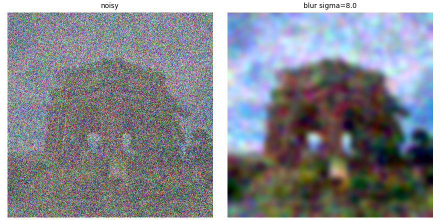

Project 3: Fun with Diffusion Models
Part A: Exploring the Power of Flow Models · Part B: Flow Matching from Scratch
Overview
Part A uses a pretrained text-to-image flow model, to denoise, generate and edit images. No training is involved. Everything is a sampling procedure built on the model's velocity prediction ṽ(xt, t, c). All results use seed 180, Euler step size h = 0.02 and, where guidance is used, CFG weight w = 7.
1.1 Constructing Noisy Training Inputs
xt = (1 − t)·ε + t·x1, ε ~ N(0, I)
interpolate scales the image by t and the noise by (1−t), so t=0 is pure noise and
t=1 is the clean image. One noise tensor is sampled and reused
for every time.
1.2 Classical Denoising
x̂1 = Gσ ∗ (xt / t)
Dividing by t restores the image amplitude (it does not remove noise). The Gaussian blur then averages noise away. For each time, I tried σ ∈ {1, 2, 4, 8, 16} and kept the one with the lowest MSE against the original, so this baseline is a best case that uses the ground truth. The chosen values were σ = 8, 4 and 1 for t = 0.25, 0.50, 0.75.

Blur trades noise for detail. At t = 0.25 the result is a few colored blobs, at 0.50 the building is recognizable but soft, and at 0.75 the image stays visibly grainy because a small σ cannot remove much noise.
1.3 One-Step Denoising
x̂1 = xt + (1 − t)·ṽ(xt, t, c), c = “a high quality photo”
The model predicts a velocity, so one extrapolation from t to 1 gives a clean-image estimate.
Far better than blur at every level. At t = 0.25 the structure is right but the estimate is smooth and smeared (foliage and foreground detail are lost, since a single step can only predict an average of plausible images). At t = 0.50 and 0.75 it is close to the original, with a smoother sky.
1.4 Visualizing Velocity
predicted update = (1 − t)·ṽ | ground truth = (1 − t)(x1 − ε) = x1 − xt
The error map is the per-pixel RMS difference between the two updates, averaged over RGB. Updates share one symmetric scale (zero = mid-gray) and the error maps share one color scale across all three times.
The predicted and ground-truth updates look alike. The error concentrates on edges and fine texture (the colonnade, carved frieze, foliage), where the exact detail is unpredictable from noise. The prediction is smoother than the ground truth, which contains the specific noise pattern. Both updates fade toward gray and the error shrinks as t grows, since there is less left to add.
1.5 Iterative Denoising with Euler Sampling
xt+h = xt + h·ṽ(xt, t, c)
Starting from the saved t = 0.50 noisy image, 25 Euler steps of h = 0.02 with the velocity recomputed after each step. It also checks constant-velocity fields analytically (50 steps from 0, 25 from 0.5, and a shortened final step from 0.93).
| Method (t = 0.50) | MSE vs. original |
|---|---|
| Gaussian blur | 0.0308 |
| One-step | 0.0133 |
| Euler (25 steps) | 0.0166 |
Global layout appears first and fine detail, texture and color only resolve in the last third. Blur is clearly worst. One-step has the lowest MSE even though Euler looks slightly crisper: one-step outputs a blurry average that scores well on pixel error, while Euler commits to one sharp, realistic sample whose small details differ from the original. MSE is therefore not a good proxy for visual quality here.
1.6 Generating Images from Noise
euler_sample from pure noise (tstart = 0) with the prompt “a high quality photo”, seeds 180–184.

This generic prompt always produces a close-up portrait of a person. Quality is poor: seed 180 has no face, 183 has a distorted face, and 181 has odd skin and torso texture.
2.1 Classifier-Free Guidance
vcfg = vc + w·(vc − vu), w = 7
Both predictions use the same xt and t; the unconditional branch uses the empty prompt. w = 0 reproduces the conditional prediction exactly. Same five seeds as 1.6.

Guidance fixes the failures: faces are well formed, sharp and photographic. The cost is diversity. All five are frontal head-and-shoulders portraits with similar framing and strong contrast. The same seed keeps its identity across both settings (for example, the raised hand in seed 182 appears in both).
3.1 Image-to-Image Editing
SDEdit-style editing: noise the image to time tstart, then denoise with CFG (w = 7) from there using a high quality photo. Starting times run from most noise (t = 0.02) to least (t = 0.50).

At t = 0.02 only a pale column against blue sky survives. The tower sharpens as t grows, but the tower details and clock only come back at t ≥ 0.25.
At t = 0.02–0.04 the input is gone and the model produces a portrait. At 0.06–0.10 it builds a rounded structure whose two window openings read as eyes, and at 0.14 a sandcastle-like temple. The palace is recovered by 0.25.
Low t gives unrelated portraits and then an old man wearing the character's eye (t = 0.06). By 0.10 it is Shrek Wazowski again, and at 0.25–0.50 it nearly matches the input.
3.1 (cont.) Editing Web and Hand-Drawn Images
The same sweep on one downloaded image and two of my drawings. Non-realistic inputs are pushed onto the natural-image manifold at low tstart.
From t = 0.02 to 0.06, Handsome Squidward and the bright background are read as a phone held in a hand. At 0.10–0.14 the face returns as a plausible but different character (flatter, with the lips and some color lost), and by 0.50 it is almost unchanged.
At t = 0.02–0.04 the drawing of SpongeBob becomes a white appliance. At 0.06 the face and smile survive but the rest is lost, and from 0.10 the line drawing returns with small changes. At 0.50, it has returned to the original drawing.
The drawing of Patrick is read as a cup, then a paper-towel roll with a blue top (t = 0.04), then a star with blue patches (0.06). From t = 0.10 it is back to line art with only slight changes.
3.2 Text-Guided Image Editing
Same procedure as 3.1 with a prompt describing the desired edit. Small tstart lets the prompt win; large tstart lets the input win.
A popsicle at t ≤ 0.06. At 0.10–0.14 the tower's framing, sky and trees are kept, but its body becomes pink with a green top with the texture of a popsicle. The tower returns with only a pink tint at 0.25 and some missing details.
From t = 0.02 to 0.14 the result is a Colosseum photo. At 0.25 it is a hybrid with the palace's arches and weathered stone, and at 0.50 the palace is nearly unchanged.
Avocado photos at low t. At 0.10–0.14 the character's eye and mouth survive as holes in the avocado, and at 0.25–0.50 the character returns with an avocado-like skin texture.
3.3 Visual Anagrams
v1 = CFG(xt, t, p1), v2 = flip(CFG(flip(xt), t, p2)), v = (v1 + v2)/2
flip rotates by 180° (both spatial axes). The averaged velocity drives the Euler update from pure noise. Each pair shows the image upright and rotated 180°.
The legs of the frog becomes the mane of the horse and the frog's eyes becomes the nostrils of the horse.
The wealthy looking man's shirt becomes the hair, and his smart hat becomes the shirt.
3.4 Hybrid Images
v1 = CFG(xt, t, p1), v2 = CFG(xt, t, p2), v = flowpass(v1) + (v2 − flowpass(v2))
Low frequencies come from the distant prompt p1 and high frequencies from the close prompt p2 (Gaussian blur, kernel 265, σ = 16 at 512×512). Each hybrid is shown at full size and shrunk to 64×64 as the distant view.
Distant: “a painting of a red panda”
Distant: “a lithograph of a quokka”
Up close, both read clearly as the houseplants prompt. At distance, we can also make out features of the red panda and the quokka.
Part B: Flow Matching from Scratch
In Part B I train my own flow-matching models on MNIST instead of using a pretrained one. I first build a one-step denoising UNet (Part 1) and see why it fails as a generator, then train a UNet to predict the flow from noise to data and sample by iterative Euler integration (Part 2), first conditioned on time only and then on time and digit class with classifier-free guidance. Every run uses seed 180, Adam, and float32 with TF32 matmuls on a Colab T4.
Architecture: the UNet follows the assignment diagram. Simple ops are Conv (3×3, stride 1), DownConv (3×3, stride 2), UpConv (ConvTranspose2d 4, 2, 1), Flatten (7×7 average pool) and Unflatten (ConvTranspose2d 7, 7, 0), each followed by BatchNorm and GELU where specified. ConvBlock, DownBlock and UpBlock are built from them. Two downsampling blocks take the 28×28 input to 7×7, a pooled 1×1 bottleneck is unflattened back to 7×7, and skip connections are concatenated at each resolution. D is the hidden width: 128 for the single-step denoiser and 64 for the flow-matching models.
B1.2 The Noising Process
z = x + σ·ε, ε ~ N(0, I), x ∈ [0, 1]
Each row adds noise of a different scale σ to the same eight test digits, using one fixed noise tensor so only the scale changes. Rows go from top to bottom through σ = 0.0, 0.2, 0.4, 0.5, 0.6, 0.8, 1.0.
The digits stay easy to read up to about σ = 0.5, get increasingly hard to follow around 0.6–0.8, and at 1.0 only faint strokes remain.
B1.2.1 Training the Single-Step Denoiser
L = Ez,x ∥Dθ(z) − x∥2, z = x + 0.5·ε
The unconditional UNet (D = 128) is trained on the MNIST training set to map a noisy digit to its clean version. Settings: batch size 256, Adam with lr 1e-4, 5 epochs, σ = 0.5. Fresh noise is drawn for every batch, so the network never sees the same noisy image twice.

By epoch 5 the denoiser removes nearly all of the noise on unseen test digits and keeps the stroke shape. Predictions are a little soft at the edges of strokes, which is expected from an MSE objective that predicts an average over plausible clean images.
B1.2.2 Out-of-Distribution Noise
The denoiser only saw σ = 0.5. Here I apply it to three test digits at other noise levels. The same noise tensor is reused across columns, so only σ changes. Rows alternate between the noisy input and the denoised output.
It generalizes well to lower noise and moderately higher noise: outputs are clean from σ = 0 through 0.6, including σ = 0 and 0.2 where the model never saw so little noise. At σ = 0.8 artifacts begin to appear, and at σ = 1.0 the model starts to invent strokes. The 7 gets smeared, the 2 grows an extra loop, and the 1 turns into a shape resembling a 6. When the input is noisier than anything it trained on, the network cannot recover the digit and falls back on stroke patterns it learned.
B1.2.3 Denoising Pure Noise
To turn the denoiser into a generator, I train a fresh UNet with the same settings (D = 128, batch 256, lr 1e-4, 5 epochs) but feed it pure Gaussian noise z ~ N(0, I) with a clean digit as the target. The bottom row of each figure is the pixel-wise mean of the training set, shown for comparison.
What I observe. Every noise input produces essentially the same output: a blurry, centered blob that looks like several digits laid on top of each other. It is not any particular digit, and it does not depend on the input noise. Across ten different noise inputs the per-pixel standard deviation of the predictions is only about 0.016 after epoch 1 and 0.006 after epoch 5. The loss levels off almost immediately at about 0.0675, which matches the MSE of the training-set mean image (0.0673).
Why. The input noise is independent of the target digit, so it carries no information about which digit to produce. The best the network can do under an MSE loss is to output the single image that minimizes the squared distance to all training images, and that is their mean (the centroid of the training set). The predictions confirm this: the mean squared difference between the prediction and the training-set mean falls to 0.0004 after epoch 1 and 0.0002 after epoch 5. The blob is bright in the center, where many digits have strokes, and dark at the edges, where almost none do. A single denoising step from noise therefore collapses the whole data distribution to its average, which is why Part 2 denoises iteratively.
B2.1–2.2 Time-Conditioned Flow Matching: Training
xt = (1 − t)·x0 + t·x1, x0 ~ N(0, I), t ~ U[0, 1]
L = E ∥(x1 − x0) − uθ(xt, t)∥2
The UNet now predicts the flow (velocity) x1 − x0 at an interpolated point xt. Time is injected with two FCBlocks (Linear–GELU–Linear) that turn the scalar t ∈ [0, 1] into per-channel multipliers: the first scales the unflattened 7×7 features (2D channels) and the second scales the output of the first up block (D channels). Settings: D = 64, batch size 64, 10 epochs, Adam with initial lr 1e-2 and an exponential decay of 0.11/10 per epoch (stepped once per epoch, so the lr ends at 1e-3). A new noise tensor and new times are drawn for every batch.
The mean loss over the last 100 steps drops from 0.133 after epoch 1 to 0.093 after epoch 10.
B2.3 Sampling from the Time-Conditioned UNet
x0 ~ N(0, I), xt+h = xt + h·uθ(xt, t), h = 1/300
Sampling starts from pure noise and takes 300 Euler steps from t = 0 to 1. Each figure shows 40 samples generated from the same seed and the same starting noise, so differences between epochs come only from the weights.
After one epoch the samples are scribbles and broken strokes with the right local texture but no global shape. By epoch 5 and 10 many samples are readable digits, but a noticeable fraction are malformed (merged or open loops, extra strokes, ambiguous digits). Because this model has no label, it must choose a digit class implicitly from the noise, and it often lands between classes.
B2.4–2.5 Adding Class-Conditioning
uθ(xt, t, c)
To control which digit is generated, I add two more FCBlocks that embed the one-hot class vector c. Class features multiply the activations and time features are added: unflatten = c1 * unflatten + t1 and up1 = c2 * up1 + t2. With probability 0.1 during training the class vector is set to all zeros, so the same network also works unconditionally (needed for classifier-free guidance). Other settings match the time-only run: D = 64, batch size 64, 10 epochs, Adam lr 1e-2 with the same exponential decay.
The class-conditioned loss is lower throughout than the time-only loss: the mean over the last 100 steps is 0.0830 after epoch 10, versus 0.0928 for time-only. Knowing the digit leaves less for the network to guess.
B2.6 Sampling with Classifier-Free Guidance
u = uuncond + γ·(ucond − uuncond), γ = 5.0
Sampling is the same 300-step Euler loop, but each step combines a prediction with the class vector and one with it zeroed out, extrapolating toward the conditional one with γ = 5. Each figure has four samples of every digit (rows) from the same seed and starting noise.
Class conditioning with guidance is far better than time-only. After a single epoch every column is already close to the requested digit, though the 4s, 5s and 6s are still malformed. By epoch 10 all forty samples are clean, correctly labeled and varied in slant and stroke width. The variation between rows shows the model is not copying one template per digit.
B2.6 (cont.) Removing the Learning-Rate Scheduler
The scheduled run starts at lr 1e-2 and decays to 1e-3. I retrained the class-conditioned model with no scheduler and two changes to compensate:
1. A constant, lower learning rate of 1e-3. This is the value the schedule decays to. It is small enough to train stably from step 0, and small enough that the weights settle at the end instead of bouncing around a minimum as they would with a constant 1e-2.
2. An exponential moving average (EMA) of the weights, decay 0.999 with a warm-up of min(0.999, (1+step)/(10+step)). Averaging the weights over the most recent steps plays the role that learning-rate decay plays: it cancels step-to-step noise late in training. BatchNorm statistics are copied from the live model. I sampled both the raw weights and the EMA weights.
| Run | Learning rate | Mean loss, last 100 steps (epoch 10) |
|---|---|---|
| With scheduler | 1e-2 → 1e-3 (exponential) | 0.0830 |
| No scheduler | 1e-3 constant | 0.0831 |
The training losses match almost exactly (0.0831 vs. 0.0830), and the samples are comparable in quality to the scheduled run. Looking closely, the raw weights are slightly rougher: a few strokes are uneven (for example the second 0) and there are stray specks near some of the 6s. The EMA weights give the cleanest samples, as sharp as the scheduled model, so most of what the scheduler provided can be recovered by a lower constant rate plus weight averaging. The tradeoff is an extra hyperparameter (the EMA decay) and a second copy of the weights, in exchange for removing the decay schedule.